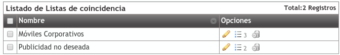
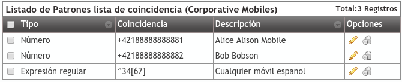

Listas de coincidencia¶
Las listas de coincidencia estan diseñadas para agrupar números conocidos o patrones numéricos para asociarlos a distintos tratamientos.
En función de la sección en la que se empleen, las listas se emplearán para comprobar un origen o destino de la llamada, por lo que se recomienda emplear nombres distintivos para las listas de coincidencia.
Por ejemplo, como se menciona en la seccion anterior Filtros de entrada externo, las listas blancas y negras pueden contener una o más listas de coincidencia. En este caso, el origen de la llamadas será comprobado contra las entradas de la lista para determinar si se deberá ignorar el filtro o rechazar la llamada directamente.
Nota
Las listas de coincidencia por si mismas no tiene un comportamiento asociado, tan solo proveen una manera común de agrupar números y patrones que serán empleados en otros procesos.
Atención
Tenga en cuenta que en función de donde se emplee la lista, se comprobarán el origen o el destino de la llamada.
La sección Configuración de Empresa > Listas de coincidencia permite definir las diferentes listas que agruparán números y patrones.
La interfaz que se le presenta al administrador de empresa cuando añade un horario es la siguiente:
Tras la creación de la lista, se podrán incluir entradas en esta.
Tal como se muestra, la lista puede contener números específicos o grupos empleando Expresiones regulares